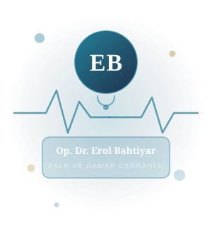
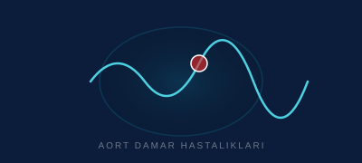
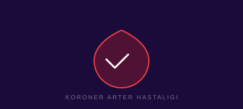
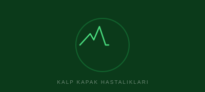

Skleroterapi
Kılcal ve orta büyüklükteki varisler için altın standart tedavi. Sklerozan madde enjeksiyonuyla yetmezlikli damar devre dışı bırakılır ve vücudun doğal emilimine terk edilir. Aynı gün işe dönüş mümkündür.
Randevu Alİzmir · 35 Yıllık Uzman Hekim
Varis tedavisinden açık kalp ameliyatına, periferik damar hastalıklarından aort cerrahisine kadar; son teknoloji cihazlar ve kanıta dayalı tıp ile bireyselleştirilmiş tedavi.

"Her hastanın hikayesi farklıdır. Doğru tanı ve kişiye özel tedavi planı, başarılı sonuçların temelidir."
1988 yılında Trakya Üniversitesi Tıp Fakültesi'nden mezun olan Op. Dr. Erol Bahtiyar, 1995 yılında Atatürk Eğitim ve Araştırma Hastanesi'nde Kalp ve Damar Cerrahisi ihtisasını başarıyla tamamladı. 35 yılı aşkın klinik deneyimiyle varis tedavisinden açık kalp ameliyatına kadar geniş bir alanda binlerce hastaya şifa sunmuştur.
Dünya standartlarındaki güncel tedavi protokollerini takip eden Dr. Bahtiyar, her vakayı ayrıntılı renkli Doppler ultrason ile değerlendirerek kişiye özel tedavi planları oluşturmaktadır.
Modern minimal invazif yöntemler ve son teknoloji cihazlarla, her hastamıza özel, kanıta dayalı tedavi planları hazırlıyoruz.
Kılcal ve orta büyüklükteki varisler için altın standart tedavi. Sklerozan madde enjeksiyonuyla yetmezlikli damar devre dışı bırakılır ve vücudun doğal emilimine terk edilir. Aynı gün işe dönüş mümkündür.
Randevu AlAlt ekstremite atardamarlarındaki darlık ve tıkanıklıklar nedeniyle oluşan yürüme ağrısı, soğukluk ve yara gibi belirtilerde endovasküler balon anjiyoplasti ve stent uygulamaları ile yüksek başarı elde edilmektedir.
Randevu AlAteroskleroz kaynaklı ileri damar tıkanıklıklarında anjiyoplasti uygulanamayan olgularda safen ven veya sentetik greft ile bypass planlanır. Tıkanıklığın uzunluğuna ve konumuna göre en uygun cerrahi yöntem seçilir.
Randevu AlToplardamar yetmezliği ve varisler için Renkli Doppler Ultrason eşliğinde kapsamlı değerlendirme yapılır; skleroterapi, EVLA (endovenöz lazer), klasik cerrahi stripping veya kombine yöntemlerden en uygun olan seçilir.
Randevu AlAort damarında gelişen genişleme ve duvar yırtılma risklerinde endovasküler stent-greft (EVAR/TEVAR) veya açık cerrahi yöntemlerden en uygun olanı seçilerek hayat kurtarıcı tedavi sunulmaktadır.
Randevu AlDerin damarlarda oluşan pıhtı nedeniyle bacakta ağrı, şişlik ve kızarıklık görülür. Erken teşhis ve doğru antikoagülan tedaviyle pulmoner emboli riski önlenmekte, kronik ven yetmezliği engellenmektedir.
Randevu Alİlk başvurudan iyileşmeye kadar her adımda yanınızdayız.
Şikayetlerinizi, tıbbi geçmişinizi ve mevcut ilaçlarınızı detaylıca değerlendiriyoruz.
Renkli Doppler ultrason ve gerekli görüntüleme yöntemleriyle damar yapınızı haritalandırıyoruz.
Bulgularınıza özel cerrahi veya ameliyatsız tedavi seçeneklerini birlikte değerlendiriyoruz.
Tedavi sonrası düzenli kontrol randevularıyla iyileşme sürecinizi yakından izliyoruz.
Yürürken artan, dinlenmekle azalan bacak ağrısı
Görünür damar genişlemeleri, şişlik, ağırlık hissi
Ateroskleroz kaynaklı dolaşım sorunları
El ve ayaklarda sürekli soğukluk ve uyuşma
Bacak ya da ayak bileklerinde şişlik
Gece bacak kaslarında ağrı ve kramp
Alt ekstremitede kronik ülser ya da yara
Bacaklarda mor, kırmızı veya soluk renk değişimi
Hastalarımızın en çok sorduğu soruları ve cevaplarını aşağıda bulabilirsiniz.
Sorunuzu Sorun →"Yıllardır varis sorunum vardı. Skleroterapi ile tedavimi tamamladı. Aynı gün işe geri döndüm. Hem profesyonel hem de son derece ilgili bir hekim."
"Bacaklarımda yürüme ağrısı ile başvurdum. Periferik arter hastalığı olduğumu öğrendim. Stent işlemi ile tedavim tamamlandı ve 3 ay içinde normal hayatıma döndüm."
"DVT nedeniyle tedavi gördüm. Doktor her adımı açıkça anlattı, tedavi sürecinde hiç sorun yaşamadım. İzmir'de bu alanda başvurulacak en iyi adreslerden biri."
Uzman ekibimizle randevu alın. Erken tanı, daha kolay tedavi demektir.

Aortta oluşan genişleme ve yırtılma riskini erken fark etmek hayat kurtarır. Belirtiler, risk faktörleri ve tedavi seçenekleri.

Kalbi besleyen koroner arterlerde darlık ve tıkanıklıklar kalp krizine zemin hazırlar. Risk faktörlerinizi tanıyın.

Aort, mitral, triküspid ve pulmoner kapaklardaki darlık ve yetmezlikler. Erken müdahale sonuçları iyileştirir.
Formu doldurun, en kısa sürede sizi arayalım.
Bilgileriniz gizli tutulur. En kısa sürede geri dönüş yapılır.